Builder
Items 1 to 10
1“Back to cost sheets” button Ready to test
Request from the call“Oh, I gotta go back to the cost sheet”12:33“Um, I can't like go back.”12:48
Now: An open cost sheet has a Back to cost sheets button in the top bar, next to Back to development item.
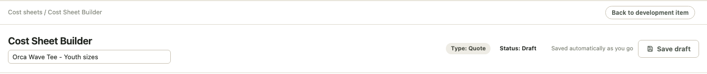
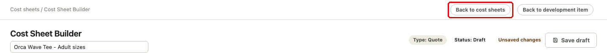
2Adult blank cost: one box for XS-XL Ready to test
Request from the call“extra small to extra large will always be the same price.”20:10
Now: On an Adult sheet, one blank cost box covers XS to XL. 2XL, 3XL, 4XL and 5XL each keep their own box. The “start at the XS cost” line is gone.
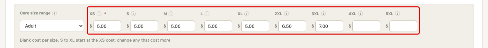
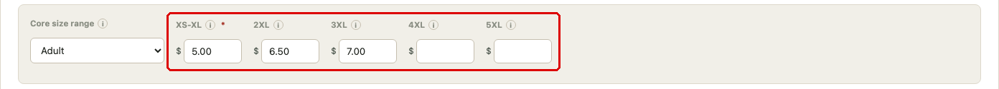
3DS number of colors starts at 1 Ready to test
Request from the call“Default. You know, just default with one. Yeah, don't even make somebody hard key it.”28:15
Now: A new DS line starts with 1 color. Change it if the art has more. Lines already saved keep their number.
Before: on 9/25 the box on a new DS line started empty. There is no 9/25 screenshot of an empty box.
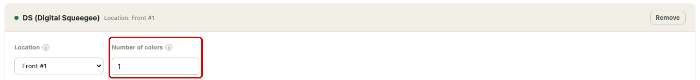
4“Colours” becomes “colors” Ready to test
Request from the callThey noticed the builder spells it the British way, “colours”. (paraphrased)26:13
Now: Every label, help text and guided mode tip in the cost sheet builder says “colors”.
This is a wording change in help text and tips, so there is no before and after screenshot. The DS line in item 3 shows the label.
5Step 3 is one price table Ready to test
Request from the call“like if you could do that add tier, but like over here, you know what I mean? So it's like adding columns”34:58“It could say dollar sign two seventeen slash thirty-five point three”33:09
Now: Step 3 has one table. Price breaks run across the top and are typed in; the first column is the MOQ, and + Add tier adds a column. Sizes run down the side. Each box shows the total cost, the quoted price, and the margin under it as “$7.45 / 35.1%”. Customer retail still shows under the table, and once one is entered each box also shows the customer margin.
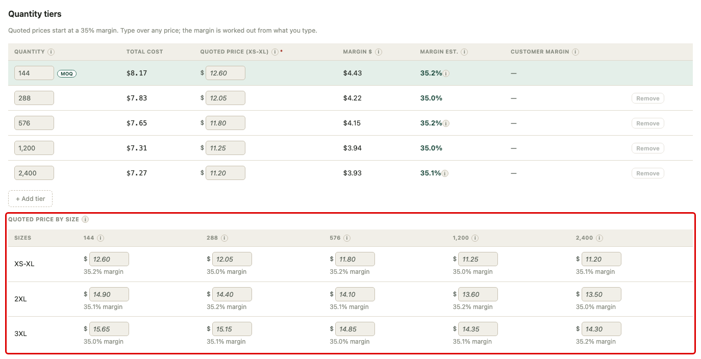
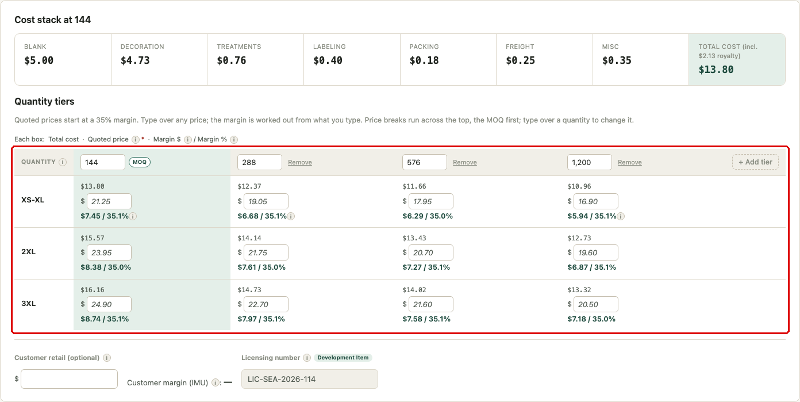
6Other cost factors move to Step 3 Ready to test
Request from the call“I would prefer if this section, this other cost factor section lived over here because this is where I'm collecting and like putting my final cost for everything.”43:05
Now: Other cost factors sit at the top of Step 3, above the price table. Step 4 now holds samples only.
Before: on 9/25 Other cost factors sat on Step 4, under Sample allocation. The 9/25 screenshots do not include that section.
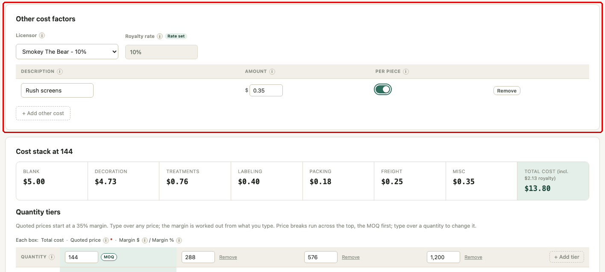
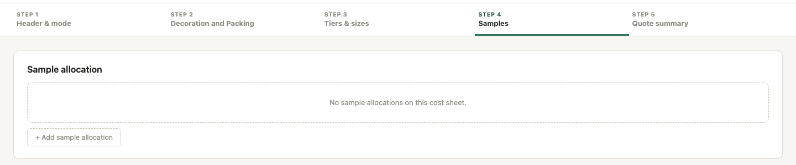
7Royalty: pick the licensor Ready to test
Request from the call“Or is it Smokey Bear ten percent?”45:58“And then it automatically fills in the rate.”46:25
Now: Other cost factors has a Licensor dropdown. Picking “Smokey The Bear - 10%” fills in the 10% royalty rate. It is optional. The royalty is the rate times the quoted price and counts in the total cost, the same way the Excel cost sheet works. The list starts with Smokey The Bear 10%, Woodsy Owl 10% and Coca-Cola 12%, and can be changed along with the other rates.
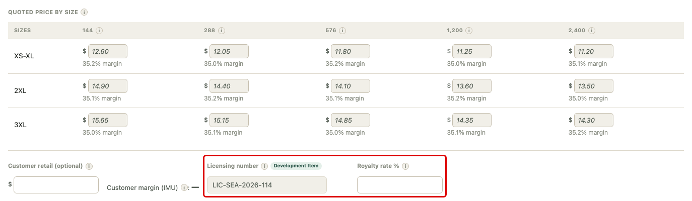
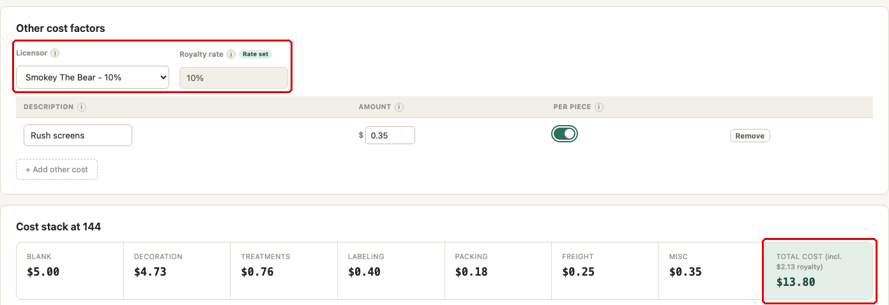
8Misc costs: what it is and the amount Ready to test
Request from the call“If we could just have like a, like an open text field, um, that I can type in, and then I can put in whatever amount”41:24
Now: Each misc cost is a box for what it is and a box for the amount. The Royalty and Licensing choices and the “Internal only” checkbox are gone.
Before: on 9/25 each other cost had a type list (Royalty, Licensing, Misc and others) and an “Internal only” checkbox. The 9/25 screenshots do not include that section.
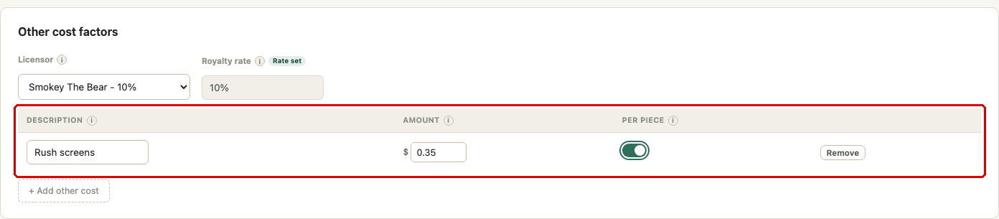
9“Purchasing notes” in Quote details Ready to test
Request from the call“In this quote details, we would have to have an area that says purchasing notes.”1:09:45
Now: Quote details has a Purchasing notes box next to Blank vendor, and Freight per piece moved over to the right, on the same row. Blank vendor stays a typing box, for example “S&S / inventory”.
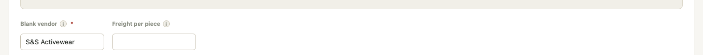
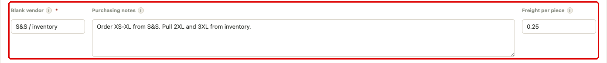
10Variance comes off the production copy Ready to test
Request from the call“What is variance?”48:39“Yeah, so I'm like, I don't think we need that.”48:56
Now: The production copy shows the quoted margin and the actual margin. Variance is gone.
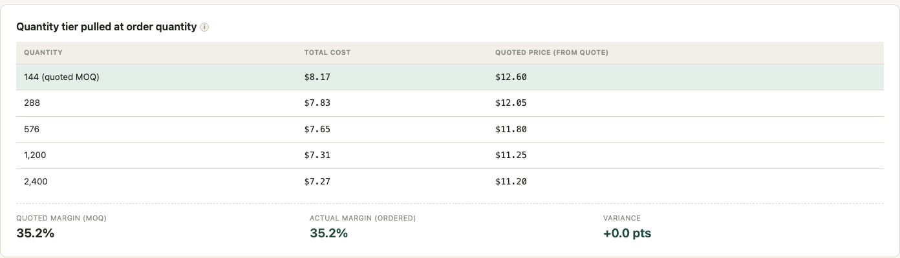
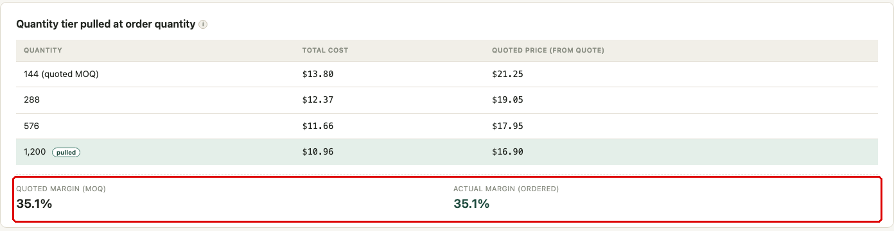
POM PDF
Items 11 to 17
11The cost sheet name is the title Ready to test
Request from the callInstead of “Cost Sheet” and the gray number under it, the title should just be the cost sheet name. (paraphrased)53:05
Now: The cost sheet name is the title. “Cost Sheet” and the gray quote number are gone.
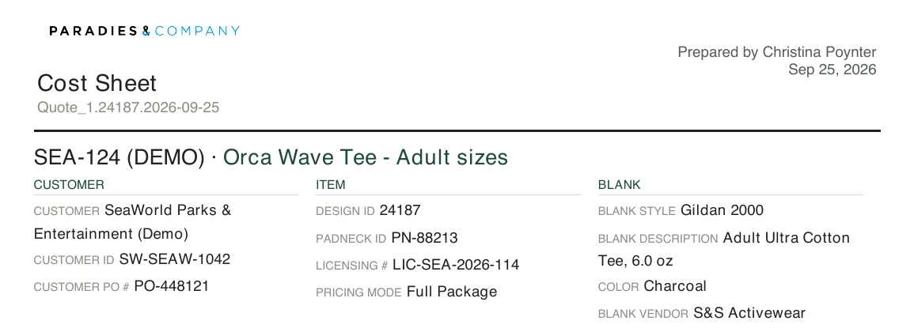
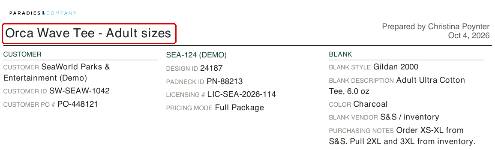
12Item number and description at the top of the Item column Ready to test
Request from the call“And actually, you can even replace the word item”55:42
Now: The item number and description, “SEA-124 (DEMO)”, head the middle column, above Design ID, in place of the word “Item”.
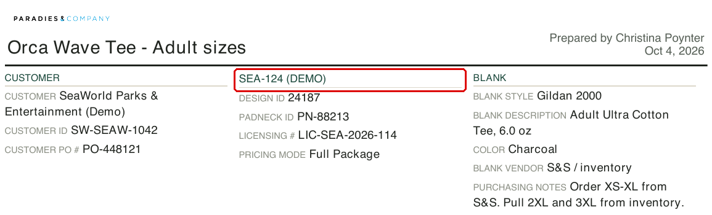
13One block of figures, at the quantity ordered Ready to test
Request from the call“I wonder if you have your cost on one line,”50:11“Like that second line of contract value and margin dollars, I don't think they need.”51:58
Now: Actual Order Quantity comes first and large. Under it, one line per size: blank cost, P&T (decoration, treatments and labeling together), packing, quoted price and margin, at the prices for the quantity ordered. An order of 1,248 uses the 1,200 prices. Est. contract value and Est. margin $ are gone.
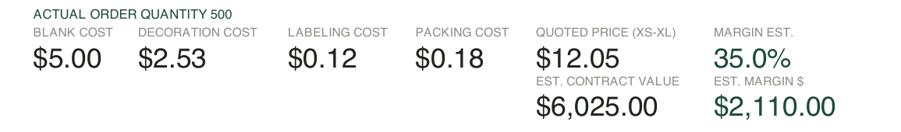
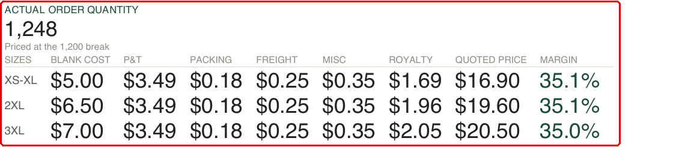
14Decoration details move up Ready to test
Request from the call“So I'm like, if this section just moved up”1:14:57
Now: Decoration details sit right under the figures: type, colors or stitch count, treatments (Foil and its height) and labeling. No location and no dollar amounts. Misc costs print under it.
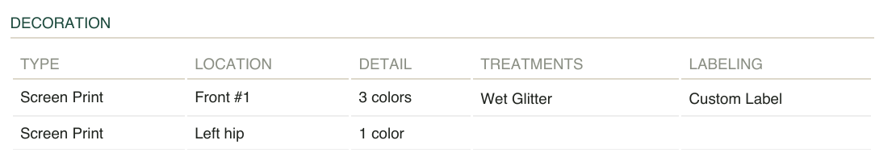
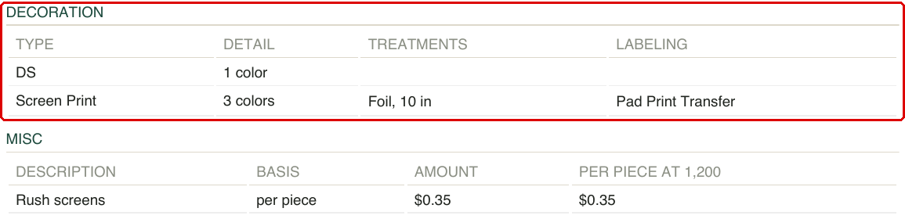
15Purchasing notes print below Blank vendor Ready to test
Request from the call“Right below it, you're just gonna put purchasing notes.”1:11:22
Now: The purchasing notes from Quote details print right under Blank vendor.
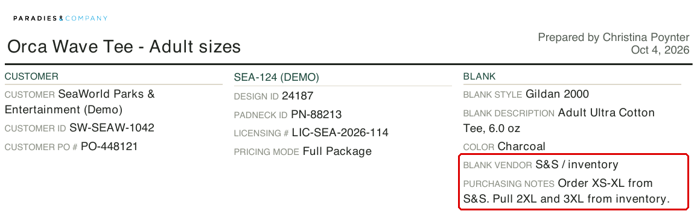
16The second page comes off Ready to test
Request from the call“This information went right to the top, and I don't think they'll ever use it.”1:17:15
Now: The POM PDF is one page. The pricing and price-by-size tables from page 2 are gone, since the figures block has what is needed.
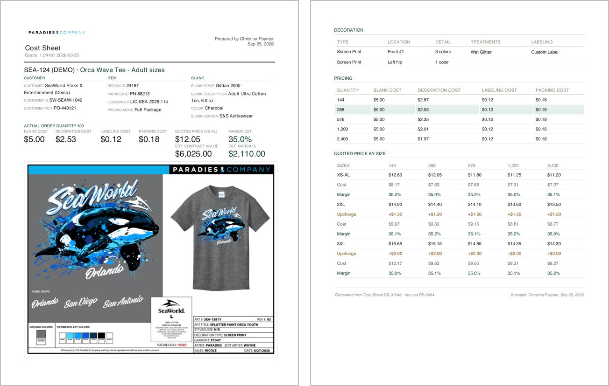
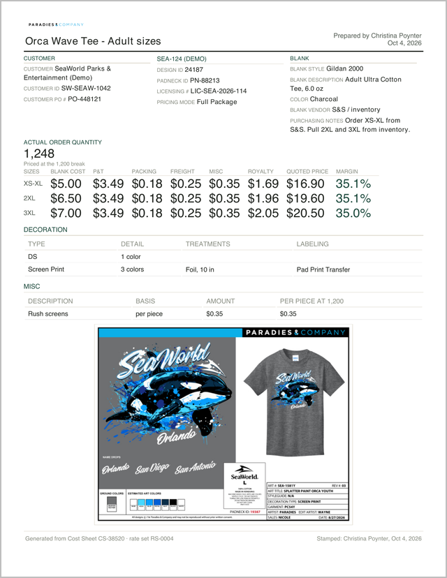
17Narrower top margin and header Ready to test
Request from the call“Anyway, but we also dedicate a lot of space to that margin of the header.”1:15:56“Like, that's a lot.”1:16:06
Now: The top margin and the header are narrower, so the page starts higher. The comp is smaller so everything fits on one page.
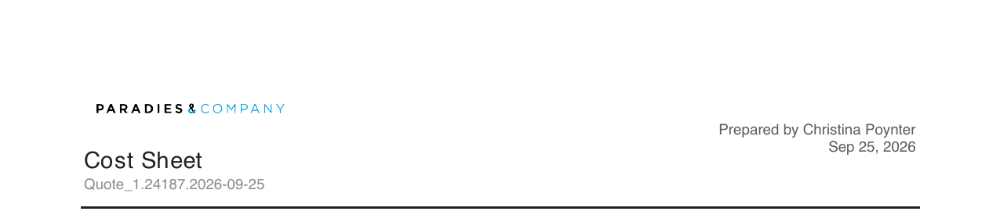
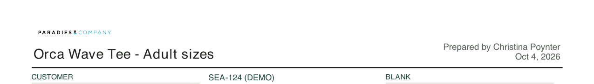
Customer PDF
Items 18 to 20
18One page, one price table Ready to test
Request from the call“Could we get this to be one sheet?”1:18:18“I think you need to have your sizes down one side”1:18:29
Now: The customer PDF is one page with one price table: sizes down the side, price breaks across the top.
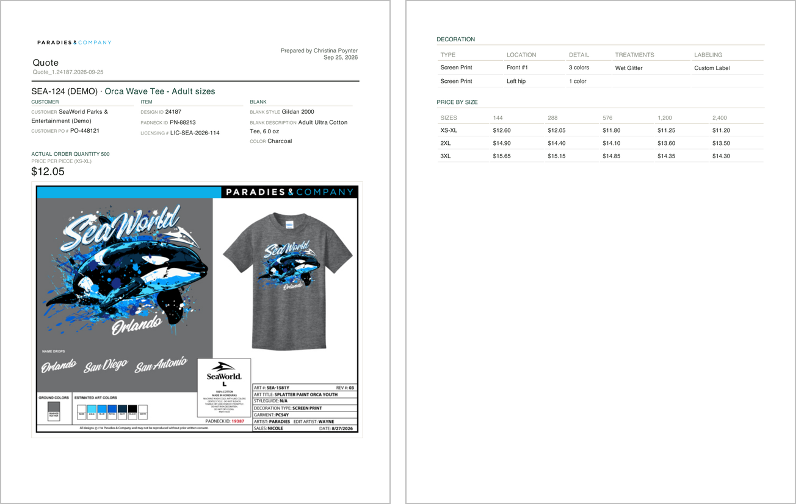
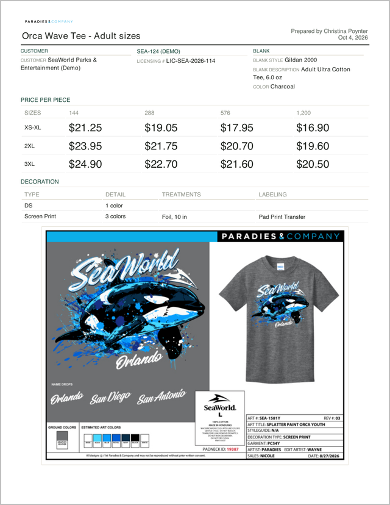
19Same changes as the POM PDF, customer information only Ready to test
Request from the call“Yeah, but we don't, want any of the non-customer facing information is what I'm saying.”1:19:03
Now: The POM PDF changes carry over to the customer PDF: the same title, item column, sizes on the left and narrower margin, and the same decoration details (type, colors, treatments and labeling, with no location). It still shows no costs, margins or purchasing notes.
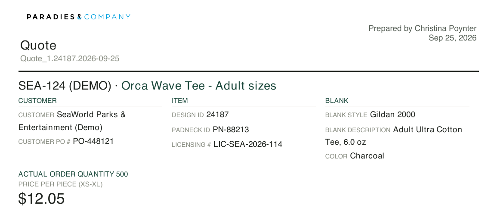
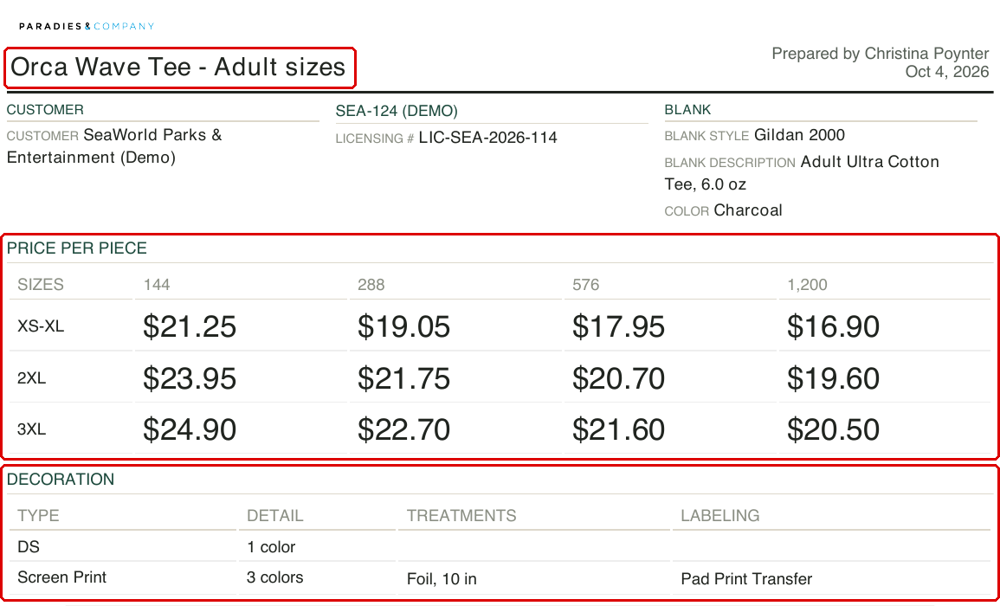
20Customer PO #, Design ID and Padneck ID come off Ready to test
Request from the call“So customer PO, we don't need.”1:21:56“I do like the licensing number there, especially for people who have them.”1:22:00
Now: Customer PO #, Design ID and Padneck ID are gone from the customer PDF. Licensing # shows only when the item has one.
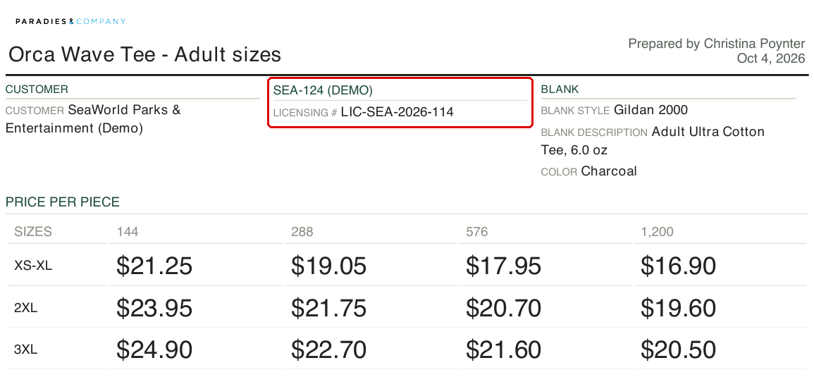
This item has a licensing number, so the screenshot shows it. On an item with no licensing number, the line does not print.
Filled-in details: please confirm
The call did not settle these points, so the builder does the following. Please confirm each one, or say what it should do instead.
C1 Please confirm
Purchasing notes carry onto the production copy and replace “PO notes” there, so there is one set of notes and it always prints for POM.
C2 Please confirm
2XL and up each use their own quoted price for the royalty.
C3 Please confirm
The starting quoted price accounts for the royalty. A typed price is not changed.
C4 Please confirm
Misc shows as its own cost box in the builder and its own figure on the POM PDF. Royalty counts inside total cost.
C5 Please confirm
The single “Actual order quantity” and “Price per piece” come off the customer PDF, since the table has every price break.
C6 Please confirm
The POM PDF also shows Freight, Misc and Royalty columns, only when the sheet has them, so each row adds up to the total cost.
One question
Extra location discount Waiting on Paradies
Did Nicole and Christina decide whether the extra location discount stays or goes? Today the builder takes 15% off the second, third and fourth screen print locations.